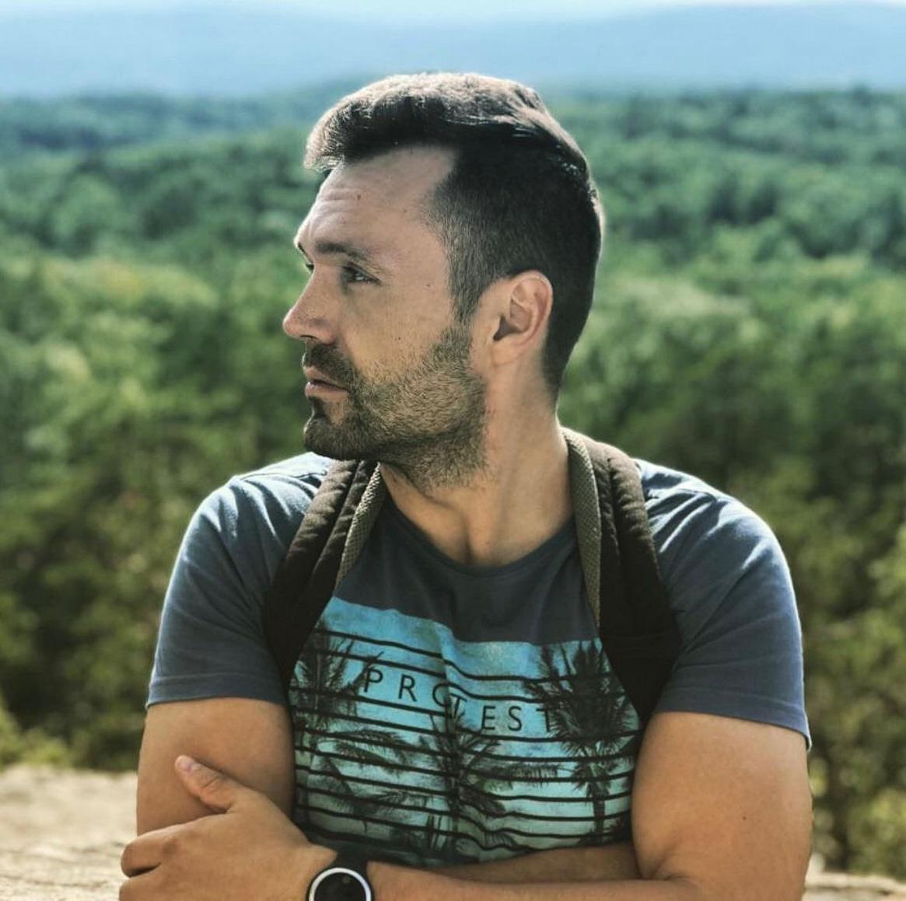

|

|
Dmitry VoroshninI'm a Frontend Developer |
About me
Hello, my name is Dmitry. I'm a programmer living in Barcelona, Spain. Originally, I'm from Chelyabinsk, but my desire for new horizons and opportunities has brought me to the heart of Catalonia. Programming is not just my profession, but also a passion that I'm deeply committed to. I have a wide range of skills and knowledge in my arsenal, and my eagerness to constantly learn and grow allows me to stay up-to-date with the latest technological trends. However, life is not just about work. In my free time, I prefer an active lifestyle. Sports are an integral part of my routine, whether it's a morning run along the beach or a session at the gym. But besides that, I love being outdoors. Hiking, traveling, and enjoying walks in the fresh air are my way of relaxing and appreciating the surrounding world.